Start da máquina concluído.
START DE MÁQUINA OP.60 A
39. Após sair uma peça aprovada a máquina inicia automaticamente o
processo de usinagem. Em ambos os canais.
38. A usinagem será iniciada e uma peça piloto será feita.
PEÇA PILOTO é a primeira peça após o inicio do processo, após reset e
trocas de ferramentas
Obs: Este processo deve ser feito com os dois canais.
37. Pressionar o botão "NOK 100% Correção".
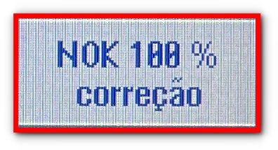
36. Pressionar o botão "MC1 CORR." ou "MC2 CORR.", dependendo do canal que a
peça foi rejeitada.
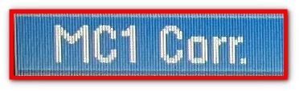
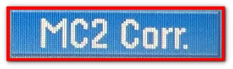
35. Pressionar o botão "USINAGEM".
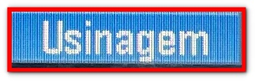
34. Pressionar o botão "PITTLER".
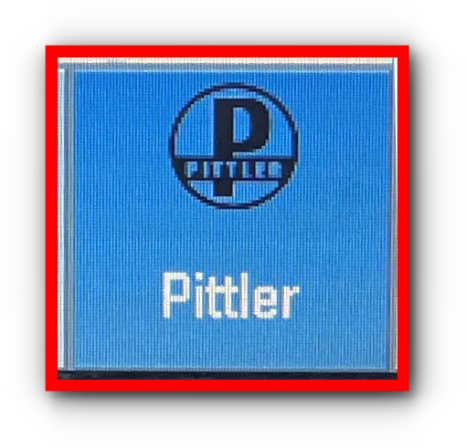
Se as medidas da peça estiverem coincidindo com as medidas do Jenoptik.
33. Pressionar o botão "MENU SELECT".
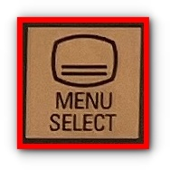
32. Se as medidas da peça não estiverem coincidindo com as medidas do Jenoptik,
é necessário realizar outra aferição no Jenoptik. Voltar para o ponto 23.
31. Medir a peça no cavalete para conferir se as medidas estão coincidindo
com as do Jenoptik.
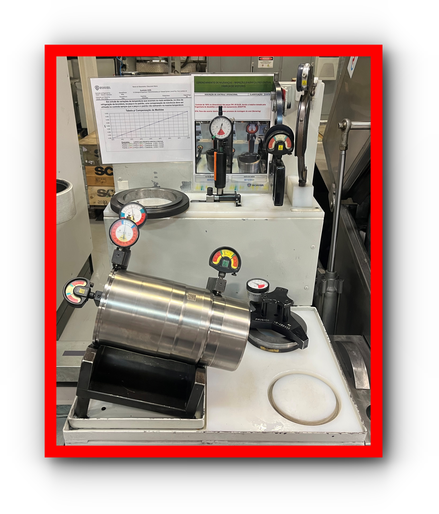
30. Retirar a peça de dentro da gaveta.
29. Pressione o botão "FECHAR A GAVETA" para a abrir a gaveta CEP.

28. Retirar a peça da gaveta CEP.
27.
Se a peça estiver OK -> Start da máquina é automatico.
Se a peça estiver NOK -> Máquina ficará parada aguardando correção e a peça vai para a gaveta
CEP.
Após pressionar o botão "Maskin Start" irá iniciar o proceso de usinagem nos dois canais
simultaneamente.
26. A peça será enviada para o Jenoptik, para ser medida, enquanto isso o processo
ficará parado esperando o resultado da medição.
25. Pressionar o botão "Maskin Start".
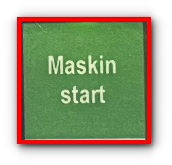
24. Pressionar o botão "AUTO".
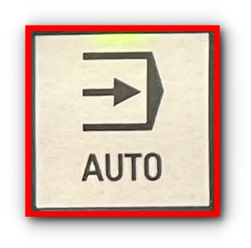
23. Para calibrar o Jenoptik, clique no botão abaixo e siga o ponto a ponto.
22. Pressionar o botão "JOG".
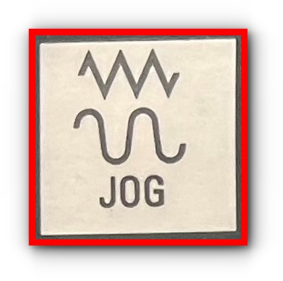
->Sempre que a máquina for ligada é necessario ralizar a calibração do aparelho de
medição Jenoptik
21. Pressionar o botão "RESET".
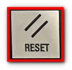
-> Vai disparar vários alarmes e iniciar uma contagem regressiva para o próximo TEST SI.
(9 horas)
20. Após fazer o "TEST SI", fechar o avanço colocando o potenciômetro em zero.
19. Pressionar o botão "SI TEST".
18. Pressionar o botão "Pittler".
18.1 Pressionar o botão "Manutenção".
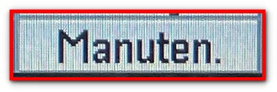
->Sempre que a máquina for ligada, será necessário fazer o "TEST SI" na máquina.
17. Para fazer o "TEST SI" é necessário pressionar o botão "Menu Select".
16. Passar a máquina para manual, pressionando o botão "JOG".
15. Pressionar o botão "RESET".
15.1 Pressionar o botão "ALARM CANCEL", se a máquina estiver apresentando algum alarme.
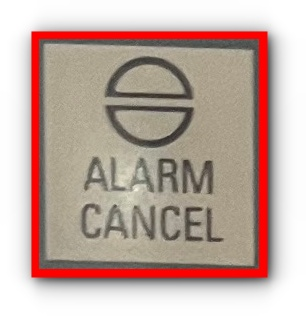
14. Pressionar o botão "MC1 BLOQUEIO DE SEGURANÇA" e o botão "MC2 BLOQUEIO DE SEGURANÇA".
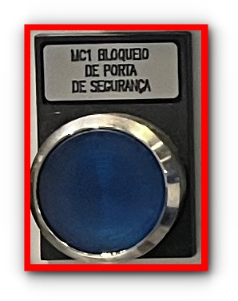

13. Pressionar o botão "Parada de emergência", botão azul que fica no meio do painel IHM
principal da máquina.
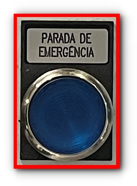
12. Pressionar o botão azul.
11. Fechar a porta e girar a maçaneta para fechar a porta.
10. Pressionar o botão azul.
9. Gire a maçaneta para abrir a porta.
Após fechar a porta ao lado do Jenoptik, fechar a porta ao lado da gaveta CEP.
8. Pressione o botão preto.
7.Pressionar o botão azul, que fica do lado de fora da área robotizada.
6. Fechar a porta e girar a maçaneta para fechar a porta.
5. Pressionar o botão azul, que fica localizado dentro da área robotizada.
4. Gire a maçaneta para abrir a porta.
Antes de entrar para a área do Jenoptik é necessário usar capacete e colocar cadeado de segurança
na porta, pois esta é uma área robotizada.
3.Para abrir a porta ao lado Jenoptik, pressione o botão preto.
2.Soltar o botão de emêrgencia, se estiver pressionado, no painel IHM principal da máquina e
fechar as portas dos dois canais e das duas entradas para o Jenoptik.
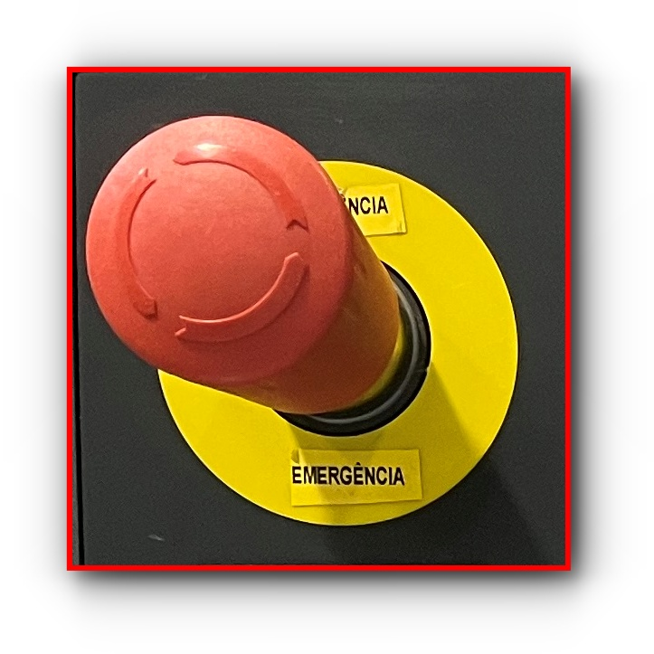
1.Ligar chave geral no painel elétrico da máquina, que fica localizado atrás da brunidora Gehring.